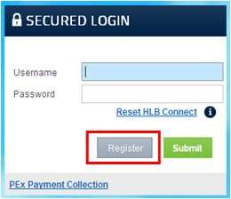
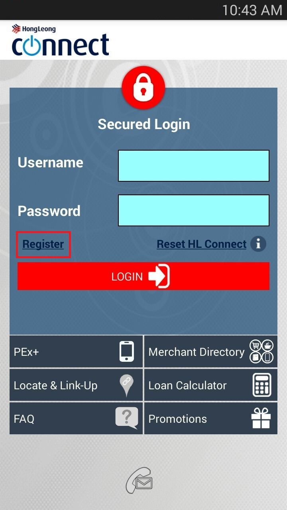

| Q10. | -
If I'm an existing Hong Leong Connect Online Banking user, do I still need to register for Hong Leong Connect Mobile Banking App?
-
No. You can login Mobile Banking using your current Username and Password of Online Banking.
|
| Q11. | -
If I'm not a Hong Leong Connect Online Banking user, do i need to register online first?
-
No. You can register for both your Hong Leong Connect Online Banking and Hong Leong Connect Mobile Banking account at once [2-in-1 registration] by activating your Hong Leong Connect app on your smart phone.
|
| Q12 | -
How do I register for Hong Leong Connect Mobile Banking?
-
Before registration, please ensure:
| | ♦ | You have at least one Active account (Current/Savings/Fixed Deposit/Loan) at HLBVN, or your ATM/Debit Card is Active - You could check your card/account status at Branch or via Hong Leong Call Centre at +84873008100. |
| | ♦ | If you have registered your mobile phone & email address to HLBVN before, now all you need to do is to contact Hong Leong Call Centre to confirm using that mobile number and email address for Hong Leong Connect services. |
| | ♦ | If you have not provided the Bank your current mobile phone & email address, please register/update at any of our Branches. |
-
Registration steps:
You can start online registration at www.hongleongconnect.com.vn or launch Mobile Banking Application, follow few simple steps to complete your registration.
| | Online Banking |
|
|

|
| |
| |
| |
| | Mobile Banking |
|
|

|
Step 1: Registration Mode
Select your registration mode via:
| | ♦ | Using ATM/Debit Card; or |
| | ♦ | Using Account (Current/Savings/Fixed Deposit/Loan) |
Step 2: Enter Details
If you wish to register via your ATM/Debit Card, please fill in below details:
| | ♦ | ATM/Debit Card Number |
| | ♦ | ATM PIN |
| | ♦ | ID Type |
| | ♦ | ID Number |
| | ♦ | CAPTCHA code |
Click Next
Or, if wish to register via your Account (Current/Savings/Fixed Deposit/Loan), please fill in below details:
| | ♦ | Account Type |
| | ♦ | Account Number |
| | ♦ | Activation Code (a list of alphanumeric characters issued to you by the Bank upon your request via Hong Leong Call Centre or at Branch. This code can only be used once and is valid for 3 days upon creation) |
| | ♦ | ID Type |
| | ♦ | ID Number |
| | ♦ | CAPTCHA code |
Click Next
Step 3: TAC Verification
Please fill in TAC (Transaction Authorisation Code: a 6-digit unique security code sent to your registered mobile phone number. The TAC is valid for 5 minutes upon request), then click Next.
Step 4: Create Credentials
Create your Username and Password for future login to Hong Leong Connect.
Tick in the box to agree with Terms & Conditions for Hong Leong Connect, then click Confirm.
Step 5: Confirmation
Congratulations! Now please, click Login with your newly created Username and Password to enjoy Hong Leong Connect Online Banking/Mobile Banking services.
Eligibility
| | ♦ | Card holder of Hong Leong ATM/Debit card; or |
| | ♦ | Account holder (Primary or Secondary) of HLBVN Current/Savings/Fixed Deposit/Loan Account. |
|
| Q13. | -
I am a new Hong Leong Bank customer and have successfully performed a first - time registration using my smart phone. Can I access my bank accounts and perform online banking transaction via an Internet browser?
-
Yes. You can access your Hong Leong Connect Online Banking via an Internet browser using the Username and Password that you have created during registration on your smart phone.
|
| Q14. | -
How do I login to Hong Leong Connect Mobile Banking App?
-
Step 1: Locate and select the "Hong Leong Connect Vietnam" app from your Home screen/Application folder;
Step 2: Enter your Username and Password then slide to "Submit".
|
| Q15. | -
In case I have problem when log on Hong Leong Connect Mobile Banking, what should I do?
-
Please close the app and open again to log on. You should double check the Username or Password to see if they are correct or not. If you still can't log on, please contact our Hong Leong Call Centre at +84873008100 for assistance.
|
| Q16. | -
What if I forget about my Username or my Password?
-
If you have forgotten your Username/Password, you may click on "Reset Hong Leong Connect" and create a new Username and Password to login to Hong Leong Connect Mobile Banking again. You may need to obtain an Activation Code to create your new Username and Password (if you register Mobile Banking using Account number).
|
| Q17. | -
Can I change my Password at my convenience?
-
Yes. It is recommended that you change your Password periodically to safeguard the security of your Mobile Banking account. Just login to your Online Banking account, go to "Others" - "Settings" - "Change Password" to make the necessary Password change.
|
| Q18. | -
What happens if I do not perform any activity during the log on time?
-
Hong Leong Connect Mobile Banking will automatically log off if there is no activity performed for more than 5 minutes.
|
| Q19. | -
What if I key in my Username/Password wrong for 3 consecutive times or TAC for 9 consecutive times?
-
When your Username/Password has been entered wrongly on 3 consecutive attempts or TAC for 9 consecutive times, your account will automatically locked. Please click on "Reset Hong Leong Connect" and create a new Password to login to Hong Leong Connect Mobile Banking again. You may need to obtain an Activation Code from any Hong Leong Bank's Branch/Transaction Office or via Hong Leong Call Centre to create your new Password and reactivate your account (if you register by Account Number).
|
| Q20. | -
What can be done if I suspect unauthorised access to my account via Hong Leong Connect Mobile Banking?
-
You are advised to contact our Hong Leong Call Centre or any Branch/Transaction Office to suspend your Hong Leong Connect services immediately. Please click on "Reset Hong Leong Connect" and create a new Password to login to Hong Leong Connect Mobile Banking again.
|
| Q21. | -
I lost my mobile phone which contains my security information inside (Username, Password), how can I do to log on Hong Leong Connect Mobile Banking?
-
To ensure safety and security for your accounts, you should contact Hong Leong Call Centre at +84873008100 and request to suspend your Hong Leong Connect services immediately. Please update your new mobile phone number with Hong Leong Bank and reset your Hong Leong Connect whenever you want to use.
|
| Q22. | -
I have de-activated/deleted my Hong Leong Connect Mobile Banking App on my device. Can I still access to Hong Leong Connect Online Banking?
-
Yes. De-activation or deletion of Hong Leong Connect Mobile Banking App on your device does not impact your Hong Leong Connect account. You can still access your account via Hong Leong Connect Online Banking.
|
| Q23. | -
I have terminated my Hong Leong Connect Online Banking account, can I still access my Hong Leong Connect Mobile Banking account?
-
No. You are required to re-register your Hong Leong Connect account. The same Hong Leong Connect account is used to access Online Banking and Mobile Banking.
|
| Q24. | -
I lost/changed my mobile phone, can I download the Hong Leong Connect App to my new phone and continue to login my existing Hong Leong Connect Mobile Banking account?
-
Yes. You may download Hong Leong Connect Mobile Banking application to a maximum of five (5) mobile electronic devices, and use the same Security Codes to login and access your Mobile Banking services. Once you have reached the maximum limit of five (5) mobile electronic devices, any attempt to register or login using a sixth (6th) mobile electronic device will fail.
|
| Q25. | -
I have changed my mobile number, can I still access my Mobile Banking App on my current phone?
-
Yes, you can still access your Mobile Banking App even if you have changed your mobile number. Please make sure you have re-registered your new mobile number for TAC at our branch or our Hong Leong Call Centre.
|